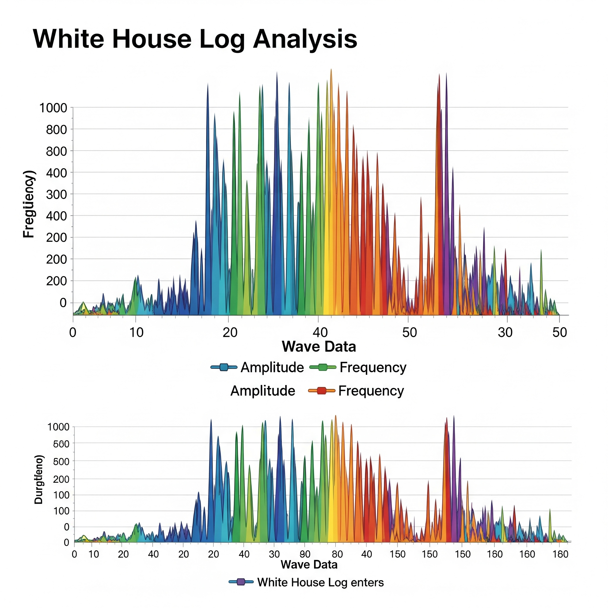

Whitehouse Log Analysis
Problem Statement
This project explores trends in the White House access logs retrieved from White House Visitor Access Entry System (WAVES) for the period of the whole year of 2023.
Data Used
The dataset for this project was obtained from https://www.hackerearth.com/problem/machine-learning/predict-the-churn-risk-rate-11-fb7a760d/ and contained approximately 7,000 customer records with 21 features. Key features included:
- Demographic Info: Gender, Senior Citizen status, Partner, Dependents.
- Account Information: Tenure, Phone Service, Multiple Lines, Internet Service, Online Security, Online Backup, Device Protection, Tech Support, Streaming TV, Streaming Movies, Contract, Paperless Billing, Payment Method, Monthly Charges, Total Charges.
- Churn Status: A binary variable indicating whether the customer churned.
Initial exploration revealed a class imbalance in the churn variable, which was addressed during preprocessing.
Methodology
The project followed a standard data science lifecycle:
-
Data Cleaning & Preprocessing:
- Handled missing values in 'Total Charges' by imputation (mean/median) or removal.
- Converted categorical features into numerical representations using One-Hot Encoding.
- Normalized numerical features using StandardScaler to ensure consistent scaling.
-
Exploratory Data Analysis (EDA):
- Visualized feature distributions and relationships with churn using histograms, bar plots, and correlation matrices.
- Identified key churn drivers such as contract type, tenure, and internet service type.
-
Feature Engineering:
- Created new features like 'Monthly to Total Charges Ratio' and 'Service Count' to capture more predictive power.
-
Model Selection & Training:
- Evaluated several classification algorithms: Logistic Regression, Random Forest, Gradient Boosting (XGBoost), and Support Vector Machines.
- Used GridSearchCV for hyperparameter tuning to optimize model performance.
- Addressed class imbalance using SMOTE (Synthetic Minority Over-sampling Technique).
-
Model Evaluation:
- Evaluated models based on accuracy, precision, recall, F1-score, and AUC-ROC.
- Generated Confusion Matrices and ROC Curves to assess performance visually.
Results & Insights
The XGBoost Classifier emerged as the best-performing model, achieving an **AUC-ROC score of 0.86 and an accuracy of 82% on the test set. Key insights derived include:
- Customers on month-to-month contracts are significantly more likely to churn.
- Longer tenure is negatively correlated with churn, as expected.
- Customers with fiber optic internet service, particularly those without online security or tech support, show higher churn rates.
- Lower monthly charges and the absence of multiple services also indicate a higher propensity to churn.
These insights allowed the telecom company to design targeted campaigns, offering longer-term contracts, improving customer support for specific internet services, and providing personalized incentives to at-risk customers.
Tools & Technologies
- Languages: Python
- Libraries: Pandas, glob, Matplotlib, Seaborn
- Development Environment: Jupyter Notebooks
- Version Control: Git, GitHub
Lessons Learned
The Bar charts shows that very high number of visitors is on the month of December and lowest visitors is in January. Stacked Bar chart shows that the Visitors Office as the highest visited, and they are also very high in December and lower in November and January. Scatter plot on delayed visits shows that entry time is 7 AM till Noon, but occasionally the period has even extended to 11 PM, December had more such visitations from Noon to night. Noticed there were 3 gaps in data as well. Line charts shows that the delays faced by visitors are high on early in the morning and after lunch. Step Chart shows that the number of visitors having delays are high in December followed by May and March. Bubble Chart shows that the month of April has more visitors repeatedly visiting the white house.
The visitor delays are noticeably high at the start of the day and immediately after lunch time. This can mean that there is an opportunity of security and logistics to reduce the delays faced by visitors. There can also be an opportunity for security team to further analyze the need for the repeated visitors.